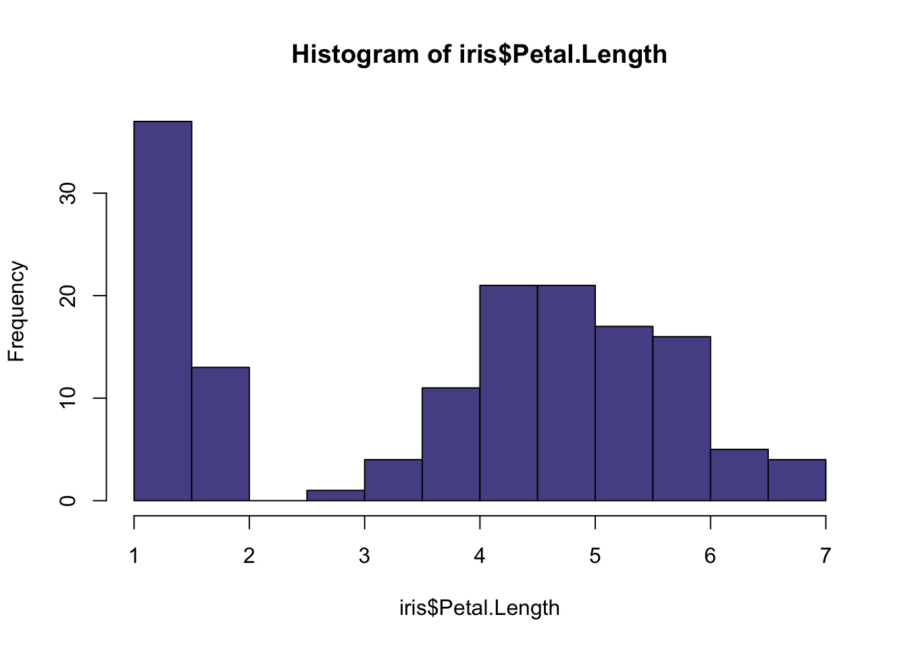

Demonstration of Michigan Colors for R Graphs
2020-11-10

1 Installation
You will need to install devtools if you have not already done so:
Then use devtools to install michigancolors.
3 Allowable Colors
Colors are drawn from https://brand.umich.edu/design-resources/colors/.
Allowable colors are: “blue”, “maize”, “tappan red”, “ross school orange”, “wave field green”, “taubman teal”, “arboretum blue”, “ann arbor amethyst”, “matthaei violet”, “umma tan”, “burton tower beige”, “angell hall ash”, and “law quad stone”
5 Examples
5.1 Base R



5.2 ggplot2
ggplot(iris,
aes(x = Petal.Length,
fill = Species)) +
geom_density(alpha = .5) +
ggtitle("Density Plot of Species in Iris Data Set") +
theme_minimal() +
scale_fill_manual(values = michigancolors())
ggplot(iris,
aes(x = Petal.Length,
y = Sepal.Length,
color = Species)) +
geom_point() +
geom_smooth() +
ggtitle("Scatterplot of Iris Data Set") +
theme_minimal() +
scale_color_manual(values = michigancolors())